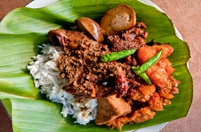

Gudeg Jogja
Gudeg Jogja
Makanan Khas Jogja
Gudeg merupakan makanan khas Jogja yang terbuat dari nangka muda dan menggunakan santan yang sangat kental. Hidangan ini dimasak dengan penuh kesabaran hingga menghasilkan cita rasa yang khas.